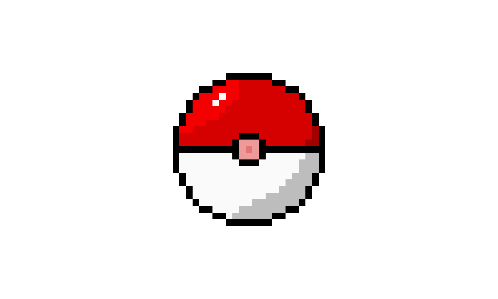

Pokemon is a video game franchise developed by Game Freak and published by Nintendo. The first game Pocket Monsters Red and Green was released on February 27, 1996. The increasing popularity of the game lead to the release of Pokemon the TV series in 1997. Games are still releasing today, while the show recently ended in March 2023, after a run time of 26 years.
The word Pokemon comes from the term "Pocket Monsters", and thats exactly what they are. They are creatures with special abilities that can be caught around carried around in your pocket via a vessel called a pokeball. These creatures are categorized by types, each having their own strengths and weaknesses
The games are known for having great soundtracks, click here to play some music!
